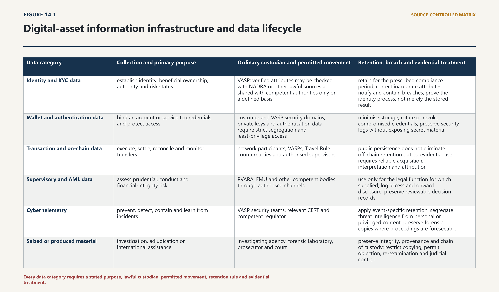
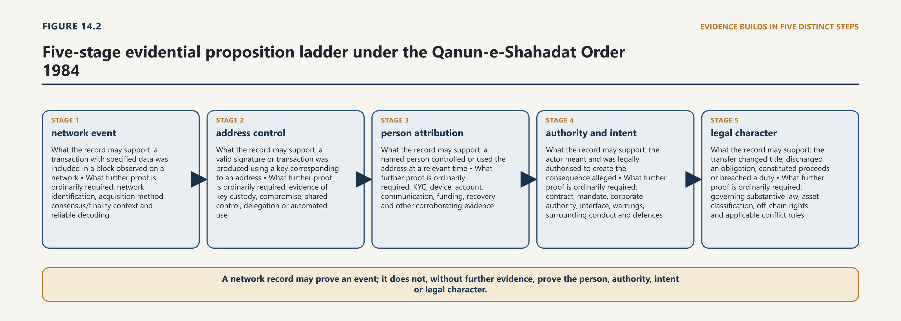
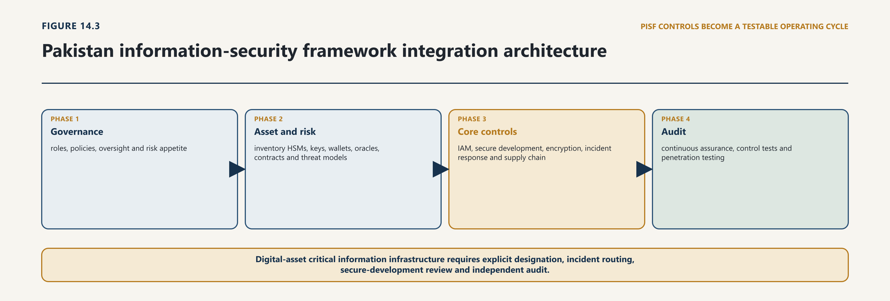
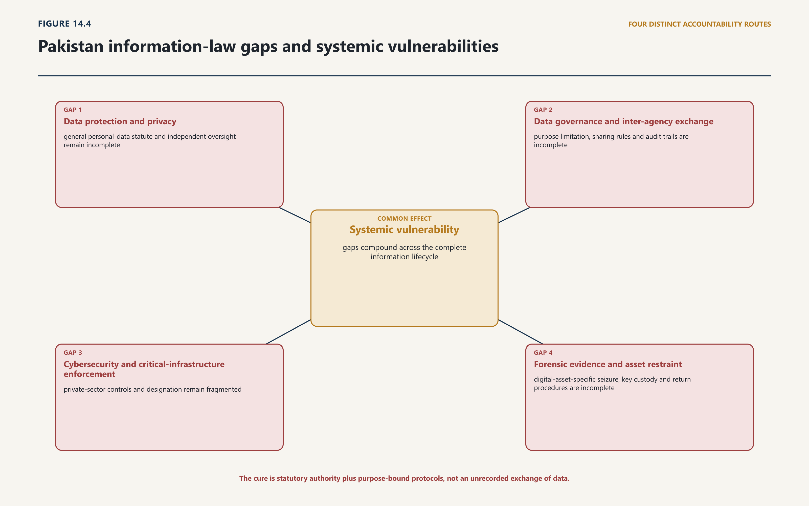

Chapter Fourteen · Part 4
Chapter 14 — Data, Cybersecurity, Digital Identity and Evidence
14.1 The Data Lifecycle and Legal Map
14.1.1 Collection, use, sharing, retention and deletion
14.1.2 Public, customer and transactional data
1
Pakistan’s emerging digital-state architecture already distinguishes digital identity, data governance, a Data Exchange Layer and digital public infrastructure. The Digital Nation Pakistan Act 2025 assigns the Pakistan Digital Authority (PDA) responsibilities for standards, a National Data Strategy, secure and standardised exchange, and infrastructure that includes identity, exchange and cloud systems. It also states that data custodians retain responsibility and control, and preserves more specific data-rights and cybersecurity laws.1 For virtual assets, those general functions must be connected to, rather than substituted for, the sector-specific authority and duties in the Virtual Assets Act.

2
The basic legal map should be expressed by data category and lifecycle:
| Data category | Collection and primary purpose | Ordinary custodian and permitted movement | Retention, breach and evidential treatment |
|---|---|---|---|
| Identity and KYC data | establish identity, beneficial ownership, authority and risk status | VASP; verified attributes may be checked with NADRA or other lawful sources and shared with competent authorities only on a defined basis | retain for the prescribed compliance period; correct inaccurate attributes; notify and contain breaches; prove the identity process, not merely the stored result |
| Wallet and authentication data | bind an account or service to credentials and protect access | customer and VASP security domains; private keys and authentication data require strict segregation and least-privilege access | minimise storage; rotate or revoke compromised credentials; preserve security logs without exposing secret material |
| Transaction and on-chain data | execute, settle, reconcile and monitor transfers | network participants, VASPs, Travel Rule counterparties and authorised supervisors | public persistence does not eliminate off-chain retention duties; evidential use requires reliable acquisition, interpretation and attribution |
| Supervisory and AML data | assess prudential, conduct and financial-integrity risk | PVARA, FMU and other competent bodies through authorised channels | use only for the legal function for which supplied; log access and onward disclosure; preserve reviewable decision records |
| Cyber telemetry | prevent, detect, contain and learn from incidents | VASP security teams, relevant CERT and competent regulator | apply event-specific retention; segregate threat intelligence from personal or privileged content; preserve forensic copies where proceedings are foreseeable |
| Seized or produced material | investigation, adjudication or international assistance | investigating agency, forensic laboratory, prosecutor and court | preserve integrity, provenance and chain of custody; restrict copying; permit objection, re-examination and judicial control |
3
The map prevents three recurrent errors. First, lawful collection for KYC does not authorise marketing, model training or indefinite behavioural profiling. Secondly, a regulator’s entitlement to receive a return does not automatically permit every recipient agency to repurpose the underlying records. Thirdly, an incident-response need to preserve volatile data does not itself establish authority to inspect all content. Purpose, necessity and legal route must travel with the data.
4
Deletion is part of this lifecycle even where some records cannot literally be erased. A VASP can delete duplicated KYC files, expire analytics features, revoke credentials and restrict an account record after the legal retention period. A public blockchain entry may remain, but the regulated entity can cease maintaining an unnecessary attribution link or active profile, subject to preservation, reporting and litigation duties. The legal system should therefore distinguish erasure of a controlled record, restriction of processing, de-linking of an attribution layer, and immutable persistence on an external network.
14.2 Personal Data and the General-Law Gap
14.2.1 Sectoral duties and constitutional privacy
14.2.2 Consent, lawful basis and sensitive financial data
5
The status of general personal-data legislation must be stated precisely. As at the evidence cut-off, the official materials checked did not establish enactment of a generally applicable Personal Data Protection Act. The Ministry of Information Technology and Telecommunication still publishes the May 2023 text as a draft. A Senate record in September 2025 described continuing consultation and delay, while a 2026 National Assembly answer described a bill as finalised rather than identifying assent or a Gazette-enacted Act.2 These materials do not justify saying that Pakistan has no privacy law of any kind. They establish the narrower and more consequential point: the checked official record did not supply an enacted, general personal-data statute with a regulator, uniform rights, breach duties and cross-sector remedies.
6
That gap does not leave virtual-asset data legally ownerless. The Virtual Assets Act contains direct safeguards. Section 5 makes applicable data-protection, governance, cybersecurity, financial-secrecy and cross-border rules prevail. Sections 22 and 34 require adequate systems, cyber controls and data privacy. Section 40 classifies customer-due-diligence material, identifiable transaction data, private keys, authentication data and proprietary systems as sensitive, and requires segregation, need-to-know access, cryptographic protection, key management and audit trails. Section 49 limits collection, use and sharing, and requires explicit, informed and revocable consent for non-essential processing.3 PECA criminalises certain unlawful disclosure of personal information. NADRA’s statute imposes security, secrecy and confidentiality obligations around its identity databases. Financial-sector, employment, telecommunications, contractual and constitutional rules may also apply to a particular relationship.
7
The weakness is not total absence of commands; it is fragmentation. A customer must be able to discover, before surrendering identity and wallet information:
8
the data controller or responsible entity;
9
the statutory, contractual or consensual basis for each purpose;
10
which fields are necessary to provide the service and which are optional;
11
the recipient categories, including foreign counterparties and public bodies;
12
the retention rule and deletion or restriction process;
13
the procedure for correction, access and complaint; and
14
the consequences and notification route if the data are compromised.
15
Consent cannot bear the whole weight. A VASP may have a statutory duty to collect and retain KYC information; consent cannot make that duty optional. Conversely, statutory KYC does not legitimise unrelated advertising or data brokerage. The correct approach separates processing necessary for law, contract and system security from genuinely optional processing. Consent is meaningful only for the latter if refusal is real, the purpose is specific and withdrawal stops future non-essential use.
16
In the interim, PVARA should use its rule-making and licensing powers to establish a sectoral baseline that does not pretend to be a substitute for Parliament’s eventual general code. Each licensee should maintain a public data notice, a processing register, a retention schedule, a breach-response procedure and an internal allocation of controller, processor and joint-processing responsibility. High-risk processing—biometric matching, persistent wallet attribution, behavioural scoring, large-scale cross-dataset linkage and automated adverse decisions—should require a documented impact assessment. Material customer-data incidents should be notified promptly to PVARA and the competent cyber body, with customer notification when risk to the person warrants it. A person should have routes to correct identity data, contest an attribution and obtain reasons for a material automated flag, subject to lawful investigation and anti-tipping-off limits.
17
The design must also anticipate later enactment. Section 5 of the Virtual Assets Act already provides the bridge: a future general law would prevail where it prescribes relevant measures. PVARA’s rules should therefore use compatible concepts and expressly yield to the later statute. This avoids building a closed sectoral regime that must be dismantled when a general regulator and rights framework become operative.
14.3 Digital Identity and Lawful Sharing
14.3.1 KYC, authentication and reusable identity
14.3.2 Public databases, private providers and access controls
18
Digital identity is not a single number. It is a set of claims about a person or legal entity, the evidence used to establish those claims, the credential used to return to a service and the authority under which another institution may rely on the result. The Digital Nation Act reflects this distinction imperfectly but usefully: its definition links individual digital identity to NADRA and legal-person identity to SECP or other public sources.4 NADRA’s Ordinance authorises national databases, interfaces and defined data uses while requiring security, secrecy and confidentiality. A National Identity Card is proof of identity to the extent its contents establish it; it is not proof that the holder controlled a particular wallet or authorised a particular transfer.5
19
The assurance chain has three different stages. Identity proofing asks whether evidence reliably connects an applicant to a claimed real-world identity. Authentication asks whether the present user controls an authenticator bound to the account. Federation or attribute exchange asks whether one trusted system can convey a verified claim to another. International identity guidance separates these assurance questions because a high-quality identity record can still be paired with weak account security, and strong authentication can protect an account opened under a false or stolen identity.6
20
For virtual assets, KYC should follow a minimum-attribute and event-based model. A VASP should collect the fields necessary for the legal duty and risk presented, verify authoritative attributes without copying an entire source database, and refresh information when a defined event occurs. Higher-risk features—corporate control, remote onboarding, politically exposed persons, sanctions exposure, unusual wallet behaviour or transfer to an unhosted address—may justify additional evidence. The VASP should record the method, source, time, assurance level and material exceptions. It should not store secret source-system credentials or receive unrestricted access to a public database.
21
Legal-person identity requires more than incorporation data. The regulated question is who owns, controls and may bind the entity. Registry information, constitutional documents, board authority, beneficial ownership and authorised-user credentials must be connected. A company certificate proves an entity’s registration; it does not prove that the person opening an exchange account has current authority to act, nor that the declared beneficial owner is accurate. Periodic and event-triggered revalidation is therefore essential.
22
Sharing must be divided into four routes. First, a VASP may verify defined attributes through a lawful interface. Secondly, one VASP may transmit the information required for a transfer and the Travel Rule. Thirdly, a competent authority may require data through a statutory reporting, supervisory or investigative power. Fourthly, voluntary or emergency disclosure may occur only where law clearly permits it and the necessity is recorded. Each route requires recipient authentication, field-level minimisation, encryption, purpose marking, an access log and a correction mechanism.
23
The danger is function creep through a national exchange layer. The PDA may set interoperable standards and facilitate secure exchange, but the Digital Nation Act says custodians retain responsibility and control. An exchange layer is not an independent legal authority to disclose. It should carry machine-readable metadata identifying the source power, requester, purpose, permitted fields, retention class and onward-disclosure condition. The log should be available to the source custodian, authorised auditor and reviewer. Where secrecy is legally necessary, notice to the person may be delayed, but the transaction should not become unrecorded.
14.4 Cyber Governance and Operational Resilience
14.4.1 Risk management, testing and incident response
14.4.2 Critical systems, outsourcing and recovery
24
Cybersecurity in a VASP is not a compliance checklist. It is the continuous governance of dependencies, adversaries, credentials, code, people, recovery capacity and loss allocation. Digital-asset firms present concentrated risks: theft or destruction of signing material; account takeover; compromised software supply chains; manipulation of privileged access; ransomware; denial of service; oracle or bridge failure; leakage of KYC records; and corruption of reporting data. A firm may restore its website while remaining unable to reconstruct customer entitlements or establish whether keys were copied. Resilience therefore concerns the preservation of critical legal and economic functions, not merely the return of computing capacity.
25
Pakistan’s CERT Rules 2023 create a tiered structure of national, government, critical-infrastructure, sectoral, federal and provincial CERTs. They address risk management, vulnerability and artefact handling, audits, incident response, disaster recovery, secure development, data classification and custodianship. Functional entities are required to report incidents to the relevant sectoral and national CERT within one hour of identification on a best-estimate basis and then provide updates; the Rules also provide for post-incident reporting and compliance escalation.7 The National Cyber Security Policy 2021 supplies policy direction on privacy, critical infrastructure, audits and risk-based governance, but its policy status must not be confused with a self-executing statutory duty.8
26
The Virtual Assets Act adds a sector-specific layer. PVARA may set operational-resilience, cybersecurity, data-protection and technical standards; licensees must maintain systems appropriate to their activities and comply with applicable cyber and resilience requirements.9 These powers should be exercised through a coordinated VASP resilience standard with five elements.
27
Govern. The board or governing body must approve risk appetite, critical-service tolerances and responsibility for keys, customer data, outsourcing, incident declarations and regulatory communication. Independent control functions should be able to challenge product and engineering decisions. Material exceptions require a named owner and expiry date.
28
Identify and protect. The firm should inventory assets, services, data, code, cryptographic keys, privileged accounts, vendors and concentration points. Controls must match the custody model. Cold, warm and hot-wallet arrangements require documented quorum, geographic and personnel separation, key-generation evidence, backup and destruction procedures, transaction limits and emergency suspension rules. Secure development requires code review, dependency controls, testing, change approval and rollback. Identity systems require phishing-resistant authentication and monitored privilege elevation.
29
Detect and respond. Telemetry should cover wallet operations, authentication, network, application, cloud, endpoint and vendor events. Detection rules must be tested against plausible attack paths and distinguish fraud, cyber intrusion and ordinary volatility. An incident classification should trigger a decision tree: contain; preserve volatile and durable evidence; notify internal authority; notify the relevant CERT and PVARA; assess customer, financial-integrity and market consequences; and coordinate public communication. The one-hour CERT notification should be treated as an initial signal, not a demand for a falsely complete diagnosis.
30
Recover and reconcile. Recovery testing should prove that the firm can re-establish key services within its tolerance, reconstruct customer positions and validate the integrity of restored data. Backups that have never been restored do not prove recoverability. A VASP should test loss of a cloud region, a critical vendor, a signing quorum, identity service and transaction-monitoring platform. Recovery must include legal reconciliation: which customer instructions were received, which transfers were authorised, which ledger entries are final and which obligations remain.
31
Learn and supervise dependencies. Post-incident review should identify technical, governance and regulatory causes without becoming a liability-avoidance exercise. Outsourcing does not move the licensed duty. Contracts should ensure access, audit, incident notice, evidence preservation, data location, exit support and continuity. Concentration in cloud, custody, identity, analytics or blockchain-infrastructure providers should be visible to PVARA through a dependency register.
32
This lifecycle aligns with contemporary international cyber frameworks that organise outcomes around governance, identification, protection, detection, response and recovery and integrate incident response into ordinary risk management.10 The value of the alignment is a common operational language, not incorporation by label. PVARA must specify which outcomes are mandatory, how proportionality works, what evidence demonstrates compliance and how conflicts with the CERT Rules are resolved.
33
A cyber rule must also preserve investigation and rights. Monitoring should be targeted to system and security purposes; privileged or personal content should not be collected simply because a tool can capture it. Emergency access and transaction suspension should be time-limited, logged and reviewed. Incident information shared with a CERT should have defined confidentiality and onward-use rules. Where a security decision blocks a customer or changes access, the firm should preserve a reason code and later review route unless notification would prejudice a lawful investigation.
14.5 Regulatory Reporting and Supervisory Data
14.5.1 Data quality, standards and interfaces
14.5.2 Privacy, minimisation and institutional access
34
PVARA cannot supervise a market it cannot see, but more data do not necessarily produce better supervision. Section 17 of the Virtual Assets Act provides for secure information sharing with domestic bodies including SBP, SECP, FMU, FIA and FBR, and permits foreign arrangements subject to the statutory conditions. Section 48 authorises secure reporting channels and application programming interfaces and leaves standards and data limitations to subordinate instruments.11 Those provisions should be implemented as a supervisory data plane: a controlled system of defined returns, event reports and lawful queries, not an unrestricted inter-agency data lake.
35
Every reporting field should have a legal and supervisory rationale. PVARA should publish a data dictionary stating the reporting entity, event or period, field definition, validation rule, permitted value, correction process, retention class and recipient authority. Core returns may cover customer-asset reconciliation, reserves and liabilities, wallet concentrations, operational incidents, outsourcing dependencies, complaints, suspicious patterns, capital and liquidity, and Travel Rule exceptions. Event-driven reports should address key compromise, material loss, prolonged outage, reserve shortfall, unauthorised transfer, breach of customer data and failure of a critical third party.
36
Quality controls are as important as submission. A firm should attest to provenance from source systems, preserve transformation logic and explain material estimates. PVARA should validate completeness, internal consistency and changes over time and should issue a correction request rather than silently overwriting an earlier return. A supervisory conclusion must remain reproducible: the decision record should identify the data snapshot, applicable rule, analytic method, human reviewer and reason for action.
37
Access should be role based and purpose bound. A prudential analyst does not require private keys; an investigator should not receive an entire customer database when a warrant identifies a narrower account or period. Inter-agency transfer should record the source power, fields, purpose, restrictions and onward disclosure. Aggregated publication can improve market discipline, but re-identification risk must be assessed, especially in thin markets where a wallet or transaction may be obvious despite removal of a name.
38
This model gives effect to the Act’s data limitations and sensitive-information safeguards. It also creates reviewable evidence of the regulator’s own conduct. Supervisory technology is legitimate when it makes lawful judgment more timely and consistent. It is not legitimate when opaque scoring becomes an unreviewable substitute for statutory criteria.
14.6 Cross-Border Data and the Travel Rule
14.6.1 Transfer restrictions and interoperability
14.6.2 Sanctions, secrecy and foreign requests
39
Virtual-asset data cross borders in at least four different ways: a transfer may involve a foreign VASP; infrastructure or support may be hosted abroad; a group company may analyse customer or cyber data in another jurisdiction; and an authority may seek evidence or supervisory assistance. These movements engage different legal routes. A single “cross-border consent” clause cannot govern them all.
40
Section 39 of the Virtual Assets Act makes offshore processing subject to applicable law and subordinate instruments. It permits PVARA to require localisation or restrict transfer for national security, financial stability, consumer protection or enforcement effectiveness. Section 47 separately requires originator and beneficiary information to accompany qualifying transfers and be retained, implementing the statutory Travel Rule.12 Section 5 preserves other applicable cross-border measures, while section 17 governs regulatory information sharing. The legal basis and safeguards must therefore be matched to the movement.
41
For ordinary service processing, the VASP should complete a transfer assessment covering the recipient, country, purpose, data fields, access by subprocessors or public authorities, security, retention, incident duties and enforceable return or deletion. Contractual controls are necessary but not always sufficient; technical measures should include field minimisation, encryption, segregated keys, tokenisation and restricted administrative access. PVARA should reserve localisation for functions where availability, enforceability or public interest cannot be achieved through less restrictive safeguards, and give reasons tied to the statutory grounds.
42
The Travel Rule is not a licence for full-profile exchange. The transmitting VASP should verify the required originator information to the applicable standard, authenticate the counterparty, transmit through a secure channel and manage missing or unreliable data through a documented risk decision. The recipient should protect and retain the fields and use them for the defined financial-integrity purpose. Transfers involving an unhosted wallet require risk-based controls and evidence concerning the customer and transaction; the legal system should not assume that possession of an address proves the counterparty’s identity.
43
Supervisory cooperation requires a separate instrument. Section 17 arrangements should specify lawful purposes, confidentiality, security, permitted onward disclosure, use in proceedings, correction, retention and termination. Foreign requests for criminal evidence should use the Mutual Legal Assistance (Criminal Matters) Act 2020 or another valid route, not an informal supervisory channel. That Act imposes purpose limitations on evidence transmitted by Pakistan, protects confidential requests, permits refusal on specified legal, constitutional and human-rights grounds, provides expedited electronic preservation and requires judicial orders for production, search and seizure.13
44
The distinction matters in urgent cases. Preservation freezes the status of identified data so that it is not lost; it does not itself authorise inspection or foreign transmission. The Mutual Legal Assistance Act allows a preservation order to lapse if the production request does not follow within forty-five days. PECA provides a domestic expedited-preservation route and corresponding judicial controls.14 A regulator, investigator and VASP should therefore record which stage has occurred: request received, preservation ordered, data secured, production authorised, disclosure completed and use restricted. Treating these steps as one undifferentiated demand risks both loss of evidence and unlawful disclosure.
14.7 Electronic Transactions and Signatures
14.7.1 Formation, attribution and integrity
14.7.2 Automated communications and evidential weight
45
The Electronic Transactions Ordinance 2002 removes a basic obstacle to digital commerce: information is not denied legal recognition merely because it is electronic. It sets functional conditions for writing, originals and retention. A record satisfies a writing requirement if it is accessible for subsequent reference. An electronic original requires reliable assurance of integrity from its final form and legibility when production is required. Retention requires accessibility, accurate representation and, where relevant, information identifying origin, destination, date and time.15
46
These rules apply directly to VASP relationships. Account terms, transaction instructions, custody mandates, disclosures, complaints and regulatory submissions may be electronic, but the firm must be able to reproduce the applicable version and show when and how the customer accepted or sent it. A hyperlink to changeable terms is weak evidence if the firm cannot preserve the version then in force. Interface records should capture the displayed text or a verifiable version identifier, time, account, authentication event and material warnings.
47
The Ordinance also distinguishes an electronic signature from an advanced electronic signature and gives the latter a rebuttable statutory presumption when the prescribed conditions are met. Attribution may arise where the record was sent by the originator, an authorised person or an automated system programmed on the originator’s behalf, but the statute also preserves qualifications where the recipient knew or should have known the message was not attributable as assumed.16 Thus, a logged-in session or cryptographic signature is important evidence of control; it does not automatically answer whether credentials were stolen, authority was exceeded, the signer was misled or the transaction was legally effective.
48
Automated systems create another separation. A platform can generate acknowledgements, match orders and execute pre-set conditions without a human pressing a final button. The law can recognise such messages while still requiring proof of the system’s operation and the legal rules governing error, cancellation and unauthorised use. Chapter 14 examines the substantive problems of smart contracts, DeFi, DAOs, oracles and autonomous agents. The present point is narrower: electronic form and automated generation do not remove the need to prove attribution, system reliability and governing legal authority.
14.8 Electronic and On-Chain Evidence
14.8.1 Authenticity, relevance and expert interpretation
14.8.2 Blockchain records, screenshots, logs and exchange data
49
Pakistan’s evidence framework is technologically open but not technologically credulous. The Electronic Transactions Ordinance amended the Qanun-e-Shahadat Order 1984 so that statements produced by an automated information system may be relevant; experts may give opinions on the authenticity and integrity of electronic documents and systems; certain printouts may constitute primary evidence; and a security procedure must be proved where authorship is denied. Article 164 permits evidence made available by modern devices or techniques and allows a conviction lawfully to rest on such evidence.17 These provisions concern relevance, admissibility and modes of proof. They do not command a court to treat every screenshot, export or blockchain entry as authentic or decisive.

50
An on-chain record should be analysed through a proposition ladder:
| Evidential proposition | What the record may support | What further proof is ordinarily required |
|---|---|---|
| network event | a transaction with specified data was included in a block observed on a network | network identification, acquisition method, consensus/finality context and reliable decoding |
| address control | a valid signature or transaction was produced using a key corresponding to an address | evidence of key custody, compromise, shared control, delegation or automated use |
| person attribution | a named person controlled or used the address at a relevant time | KYC, device, account, communication, funding, recovery and other corroborating evidence |
| authority and intent | the actor meant and was legally authorised to create the consequence alleged | contract, mandate, corporate authority, interface, warnings, surrounding conduct and defences |
| legal character | the transfer changed title, discharged an obligation, constituted proceeds or breached a duty | governing substantive law, asset classification, off-chain rights and applicable conflict rules |
51
Blockchain integrity is relative to a technical system and observation point. A ledger may be tamper-evident and resistant to retrospective alteration while recording a transfer induced by fraud, executed with a stolen key, generated by faulty code or associated with a false off-chain claim. Public addresses are typically pseudonymous rather than verified civil identities.18 Forks, reorganisations, bridges, wrapped assets, layer-two systems and contract upgrades can complicate what “the chain” and “final” mean. An expert must identify the network, block, transaction, contract, token standard, event fields, relevant state and method used to retrieve them.
52
Screenshots are demonstrative aids, not self-proving originals. They can omit the URL, network, time zone, query parameters, surrounding records and later changes. A proper acquisition should preserve the underlying data where possible: node or provider response, raw transaction and receipt, block header, contract bytecode or verified source, token metadata, timestamps, query method, software version and cryptographic hash of the collected file. If a third-party explorer is used, the witness should explain what it displays and preserve the result; for a material dispute, independent retrieval or corroboration is preferable.
53
Attribution requires a joined proof. KYC records may connect an exchange account to a customer but may be wrong, stale or fraudulently obtained. IP and device evidence may show access but not the human operator. A signed message may show key control at a time but not earlier authorship. Exchange deposit records, fiat funding, communications, recovery information, withdrawal whitelists, multi-signature policies and conduct after the event may reinforce or contradict one another. The court should assess the combined chain rather than permit a single analytic label to decide identity.
54
Pakistan’s courts have already insisted on proof when electronic authorship or authenticity is denied. Reported Supreme Court authority reflected in official judicial materials treats automated evidence as admissible in principle while requiring the proponent to satisfy the relevant Qanun-e-Shahadat and Electronic Transactions Ordinance requirements; authenticity of recordings similarly depends on factors such as source, safe custody, absence of tampering and identification of the persons concerned.19 The lesson is not a rigid technology-specific formula. It is that admissibility does not collapse proof of integrity, attribution and weight.
55
Expert evidence should remain contestable. The expert should disclose qualifications, instructions, data relied upon, tools and versions, validation steps, assumptions, error sources, alternative explanations and reproducible outputs. If a proprietary analytics tool supplies a cluster label or risk score, the court and opposing party need enough information to test the method without necessarily compelling disclosure of every protected trade secret. A conclusion whose basis cannot be meaningfully challenged should carry correspondingly limited weight.
14.9 Preservation, Seizure and Courtroom Chain
14.9.1 Forensic acquisition and continuity
14.9.2 Admissibility, disclosure and challenge
56
Digital evidence is unusually vulnerable at both ends. It can disappear quickly when logs rotate, cloud accounts close or keys are destroyed; it can also be over-collected because an investigator can copy far more than a warrant lawfully identifies. Preservation and proportionality must therefore operate together.

57
PECA provides the central domestic sequence. An authorised officer may require expedited preservation of specified data for ninety days, must notify the court within twenty-four hours and may seek a court extension. Service providers must retain specified traffic data for at least one year, subject to the statutory conditions, and production ordinarily requires a warrant. Search and seizure of stored data, access to content and real-time collection use judicial processes with defined necessity and duration. The statute requires attention to relevance, integrity, secrecy, business continuity, chain of custody and logs, and it provides for lists, receipts, witnesses and a forensic image for the owner subject to court control.20
58
A virtual-asset evidence protocol should translate those requirements into an operational chain:
59
Identify and preserve. Define the account, address, device, system, data type and time period. Issue the correct preservation notice and record service, scope and expiry.
60
Obtain authority. Use the statutory production, search, seizure or real-time route. A preservation request is not a production order; regulatory access is not a criminal warrant.
61
Acquire proportionately. Prefer targeted export or forensic imaging where it supplies the identified evidence. Segregate unrelated personal, privileged and commercially sensitive material.
62
Record provenance. Document who acquired the material, from which system or device, using which tool and version, at what time and in which state. Hash acquired files and preserve originals read-only where feasible.
63
Maintain custody and analysis separation. Every transfer, access and derivative must be logged. Analysts should work on verified copies and retain scripts, queries and transformation steps.
64
Enable challenge. Supply inventories and lawful copies, disclose the method relied upon and preserve the ability to conduct independent examination or court-directed re-examination.
65
Dispose lawfully. At the end of the retention, proceeding and appeal periods, return, delete or restrict material according to the governing order and record the disposition.
66
Wallet seizure adds a critical distinction between evidence and control. Copying a seed phrase may preserve proof but also enables transfer. Moving assets to a government-controlled address may protect them but changes the on-chain state and creates a custody obligation. Investigators require approved wallets, multi-person authorisation, tested key ceremonies, asset inventories, fork and airdrop policies, valuation records and an auditable transaction process. A warrant to search a device should not be treated as silently deciding title, forfeiture or disposal.
67
The National Forensics Agency Act 2024 establishes an independent national body with functions concerning digital forensics, standard operating procedures, collection and preservation, expert opinion, records, integrity, accreditation and training. Its reports and opinions connect to the Code of Criminal Procedure and the electronic-evidence provisions of the Qanun-e-Shahadat Order, and the Act permits court-directed re-examination.21 PVARA, NCCIA, FIA, provincial police, prosecutors and the Agency should agree a virtual-asset protocol that allocates first response, specialist acquisition, wallet custody, laboratory examination and testimony. Institutional labels cannot replace validated methods; the protocol should require accreditation or competence appropriate to the task and record when a non-standard method is used.
68
Cross-border evidence must preserve the same chain. Under the Mutual Legal Assistance Act, electronic data can be preserved urgently and then produced or searched through a court. The person affected may object within the specified period, while the data remain secured, and the executing authority must maintain integrity.22 Foreign material should arrive with certification or testimony sufficient to establish source, acquisition and custody under the applicable evidential rules. A blockchain’s global visibility does not make foreign exchange account records or cloud logs domestically obtainable without lawful process.
14.10 Automated Analysis and Evidential Limits
14.10.1 Clustering, attribution and probabilistic inference
14.10.2 Human verification, explainability and contestability
69
Supervisors and investigators will use automated systems to identify connected wallets, mixing patterns, rapid layering, sanctions exposure, anomalous access, fraud rings and cyber compromise. These tools can reduce a vast search space and reveal relationships a human would miss. They are most valuable as lead generation, prioritisation and corroboration. Their output must not be mistaken for an adjudicated fact.

70
Blockchain analytics rests on heterogeneous techniques: common-spend and change-address heuristics, service attribution, timing and amount patterns, deposit reuse, smart-contract interaction and information supplied by VASPs or investigators. Obfuscation, privacy-enhancing methods, cross-chain activity, bridges, unhosted wallets and inconsistent vendor datasets create uncertainty. FATF’s 2026 report on stablecoins and unhosted wallets describes blockchain analytics as useful while recognising technical, cost, skills, coverage and methodology limitations and the continuing need for traditional investigation and human judgment.23
71
A public authority using such analysis should maintain a model and tool register. For each system it should record purpose, legal basis, data sources, vendor and version, validation population, known failure modes, thresholds, update history and human-review rule. Procurement should secure audit and export rights so that a material decision remains explainable after a vendor changes its model. Validation must address Pakistan-relevant services, languages, transaction patterns and error costs rather than relying only on a vendor’s global accuracy claim.
72
An analytic output should carry a confidence statement tied to the proposition asserted. “Address interacted with a service cluster” is different from “customer knowingly transacted with a prohibited person.” A risk score can justify closer review; coercive action should require the statutory test and evidence sufficient for that action. The analyst should seek disconfirming information, document alternative explanations and avoid circular validation in which a vendor’s earlier label becomes the ground truth for its later score.
73
Automated identity or fraud decisions need similar discipline. A biometric or document score estimates a match or anomaly under a model; it does not determine legal identity. A person materially affected by denial, freeze or reporting escalation should have an avenue for competent human review and correction, subject to investigation and anti-tipping-off limits. The review record should identify the input, rule, model version, threshold, explanation available to the reviewer and final reason.
74
In proceedings, the proponent should not present a colourful transaction graph as if its visual certainty were evidential certainty. The underlying addresses, transactions, clustering rule, excluded data and confidence should be disclosed to the extent required for a fair challenge. An expert must distinguish direct observation from inference and inference from ultimate legal conclusion. Courts decide identity, knowledge, authority and liability under law; software does not.
Corrective Architecture and Implementation Sequence
75
Pakistan does not need one institution to possess every dataset. It needs a lawful data plane connecting responsible custodians through explicit authority, standardised fields, security controls and reviewable events. PVARA should lead a Virtual-Asset Data, Cybersecurity and Evidence Code made through the proper statutory instrument and coordinated with the PDA, National CERT, NADRA, FMU, NCCIA, National Forensics Agency, SBP, SECP and relevant provincial bodies.
76
The Code should contain seven modules:
77
Data governance: processing roles, legal bases, notices, minimisation, retention, correction, breach response, high-risk assessments and non-essential consent.
78
Identity assurance: proofing, authentication, federation, legal-person authority, attribute verification, refresh events and recovery.
79
Supervisory reporting: data dictionary, secure API, validation, correction, provenance, access, sharing and publication rules.
80
Operational resilience: governance, critical-service tolerances, wallet and key controls, secure development, outsourcing, incident classification, notification, recovery and reconciliation.
81
Cross-border movement: transfer assessments, Travel Rule channels, foreign supervisory arrangements, localisation criteria and lawful production routes.
82
Evidence: preservation notices, warrant interfaces, forensic acquisition, hashes, custody logs, wallet-seizure controls, expert disclosure and re-examination.
83
Analytics: tool inventory, validation, confidence language, human review, disclosure and challenge.
84
Implementation should be sequenced rather than declared complete at publication. In the first ninety days, PVARA should designate accountable officers, inventory existing statutory reports and data flows, agree an incident-notification bridge with National CERT, publish preservation-contact requirements and issue an interim sensitive-data and key-management direction. It should also identify which delegated provisions require Rules, Regulations, licence conditions or guidance; a guidance document must not carry a coercive duty beyond its legal source.
85
Between ninety and 180 days, the Authority should consult on the Code, publish the reporting dictionary and incident taxonomy, define identity assurance profiles, establish a cross-agency data-sharing template and agree a forensic protocol. A small group of licensees should test submissions and incident exercises using synthetic data. The pilot must test corrections, rejected records, access logs and recovery—not only successful transmission.
86
Between 180 and 365 days, PVARA should commence the modules in risk order, require independent testing of critical controls, exercise a wallet-compromise and cross-border evidence scenario, and publish anonymised compliance and incident statistics. It should review whether the tools and institutions can meet the duties before imposing scale-dependent deadlines. Material findings should feed Parliament’s consideration of general personal-data legislation and any necessary amendments to sectoral statutes.
87
The rights and review structure must be visible from the start. A customer needs routes to correct data and challenge a VASP’s material error. A licensee needs a process to correct a return and contest a supervisory conclusion. An affected person needs the judicial and evidential protections attached to search, seizure and production. An expert conclusion must remain testable. PVARA’s blocking and preservation powers should be exercised through written reasons, statutory basis, recorded scope and the representation and response periods supplied by the Act.24
88
Success should be measured by tested outcomes: whether a compromised key can be contained without losing the evidence trail; whether customer positions can be reconstructed; whether a Travel Rule record reaches an authenticated counterparty with only the required fields; whether a regulator can reproduce the basis of a decision; whether an investigator can preserve data before expiry and obtain it through the right process; and whether a court can distinguish ledger integrity from identity, intent and legal effect.
89
Pakistan’s virtual-asset framework already contains substantial information-law components. The Virtual Assets Act regulates sensitive information, cross-border processing, reporting, cybersecurity and purpose-limited use. The Digital Nation Act provides an interoperable public-infrastructure setting. PECA, the CERT Rules, the Electronic Transactions Ordinance, the Qanun-e-Shahadat Order, NADRA’s statute, the National Forensics Agency Act and the Mutual Legal Assistance Act supply additional controls. Their coexistence is not yet a unified regime.
90
The necessary organising principle is a lawful chain: authority before collection; purpose attached to use; responsibility attached to custody; safeguards attached to sharing; preservation separated from production; integrity separated from attribution; and technical inference separated from legal judgment. Applied consistently, that chain makes regulatory data more useful, cyber response more reliable and electronic evidence more credible. Ignored, the same infrastructure can create concentrated surveillance, unreviewable scoring, overbroad seizure and false courtroom certainty.
91
The next chapter moves from information infrastructure to systems that act: smart contracts, decentralised finance, DAOs, oracles and autonomous agents. The lesson carried forward is decisive. Code may execute an instruction and a ledger may record the result, but neither fact alone identifies the lawful actor, validates the input or determines the legal consequence.
Chapter 14 Conclusion and Standalone Contribution
92
The evidential value of digital-asset data depends on how it was obtained, linked, preserved and interpreted. Ledger immutability does not authenticate the human actor; identity matching does not prove authority; and a risk score does not establish the elements of liability. Each inference must remain visible and contestable.
93
The integrated response is a governed data lifecycle. Lawful purpose, minimisation, access control, cyber resilience, cross-border safeguards, integrity records and forensic provenance must travel with the information from onboarding to court. That architecture supports supervision while protecting the reliability and fairness on which enforcement depends.
94
Independent-use note. This paper is Chapter 14 of Code, Law, and Capital: Digital Assets, Legal Authority and Pakistan's Regulatory Order by Khurram Chughtai. It states the law and evidence to 21 August 2026 and should be cited with its chapter title and version.
Chapter 14 Selected Authorities and Notes
Footnotes
- ↑ Digital Nation Pakistan Act 2025, ss 2 (definitions of “Data Exchange Layer”, “data governance”, “digital identity” and “digital public infrastructure”), 8(g)–(k), 11–12 and 28.
- ↑ Ministry of Information Technology and Telecommunication, ‘Draft of Personal Data Protection Bill May 2023’ <https://moitt.gov.pk/Detail/YjVmNzU0MWMtYzBkMC00Yjg5LTk1ODktOTJiODYzZTY5ZWRk> accessed 16 August 2026; Senate of Pakistan, ‘Senate body calls for early finalization of Personal Data Protection Bill’ (19 September 2025) <https://www.senate.gov.pk/en/news_content.php?id=NjMzNg%3D%3D> accessed 16 August 2026; National Assembly Secretariat, written answer concerning the Personal Data Protection Bill, published 2026 <https://na.gov.pk/uploads/documents/6a1d62bdce349_708.pdf> accessed 16 August 2026. No assent or Gazette-enactment record for a general personal-data Act was located in the official materials checked by the evidence cut-off.
- ↑ Virtual Assets Act 2026 (Act No XIII of 2026) (‘VAA’), ss 5(2), 22(1), 34, 40 and 49; Prevention of Electronic Crimes Act 2016, s 41.
- ↑ Digital Nation Pakistan Act 2025, s 2, definition of “digital identity”.
- ↑ National Database and Registration Authority Ordinance 2000, ss 5, 7, 19 and 28–29.
- ↑ National Institute of Standards and Technology, Digital Identity Guidelines, SP 800-63-4 (1 August 2025), especially the separation of identity proofing, authentication and federation and the IAL, AAL and FAL assurance models <https://pages.nist.gov/800-63-4/> accessed 16 August 2026; NIST, Identity Proofing Requirements, SP 800-63A-4 (1 August 2025) <https://csrc.nist.gov/pubs/sp/800/63/A/4/final> accessed 16 August 2026.
- ↑ Computer Emergency Response Team (CERT) Rules 2023, rr 4–10, 12–17, 22 and 25–26.
- ↑ Government of Pakistan, National Cyber Security Policy 2021, especially paras 5–7 and 9–10. The document is used as policy direction, not represented as an enacted statute or as replacing binding rules.
- ↑ VAA (n 3), ss 8(2), 22(1) and 34.
- ↑ National Institute of Standards and Technology, The NIST Cybersecurity Framework (CSF) 2.0, NIST CSWP 29 (26 February 2024) <https://www.nist.gov/publications/nist-cybersecurity-framework-csf-20> accessed 16 August 2026; NIST, Incident Response Recommendations and Considerations for Cybersecurity Risk Management, SP 800-61 rev 3 (April 2025) <https://csrc.nist.gov/pubs/sp/800/61/r3/final> accessed 16 August 2026.
- ↑ VAA (n 3), ss 17 and 48.
- ↑ VAA (n 11) ss 5, 39 and 47. See also Financial Action Task Force, Updated Guidance for a Risk-Based Approach to Virtual Assets and Virtual Asset Service Providers (October 2021), recommendation 16 discussion and paras 179–204 <https://www.fatf-gafi.org/en/publications/Fatfrecommendations/Guidance-rba-virtual-assets-2021.html> accessed 16 August 2026.
- ↑ Mutual Legal Assistance (Criminal Matters) Act 2020, ss 10 and 17–20.
- ↑ Mutual Legal Assistance (Criminal Matters) Act 2020 (n 13) s 19; Prevention of Electronic Crimes Act 2016, s 31.
- ↑ Electronic Transactions Ordinance 2002, ss 3–6.
- ↑ Electronic Transactions Ordinance 2002 (n 15) ss 7–9 and 13–15.
- ↑ Qanun-e-Shahadat Order 1984, arts 46A, 59, 73, 78A and 164, as amended by the Electronic Transactions Ordinance 2002, s 29 and Schedule.
- ↑ Dylan Yaga and others, Blockchain Technology Overview, NISTIR 8202 (National Institute of Standards and Technology, October 2018), especially pp 1–2, 21–22 and 30–32 <https://www.nist.gov/publications/blockchain-technology-overview> accessed 16 August 2026.
- ↑ Mian Khalid Pervaiz v The State 2021 SCMR 522, discussed and applied in official Sindh High Court case material <https://caselaw.shc.gov.pk/caselaw/view-file/MjY2OTc1Y2Ztcy1kYzgz> accessed 16 August 2026; Ishtiaq Ahmed Mirza v Federation of Pakistan PLD 2019 SC 675. These authorities are used for the general authentication propositions stated, not as blockchain-specific decisions.
- ↑ Prevention of Electronic Crimes Act 2016, ss 31–36 and 39–40.
- ↑ National Forensics Agency Act 2024, ss 4–5, 9–10, 17 and 22.
- ↑ Mutual Legal Assistance (Criminal Matters) Act 2020, ss 19–20.
- ↑ Financial Action Task Force, Targeted Report on Stablecoins and Unhosted Wallets: Peer-to-Peer Transactions, Illicit Finance Risks and Key Mitigation Measures (June 2026), especially the discussion of blockchain-analytics capabilities and limitations <https://www.fatf-gafi.org/content/dam/fatf-gafi/publications/targeted-report-on-stablecoins-and-unhosted-wallets.pdf.coredownload.inline.pdf> accessed 16 August 2026.
- ↑ VAA (n 3), s 61.